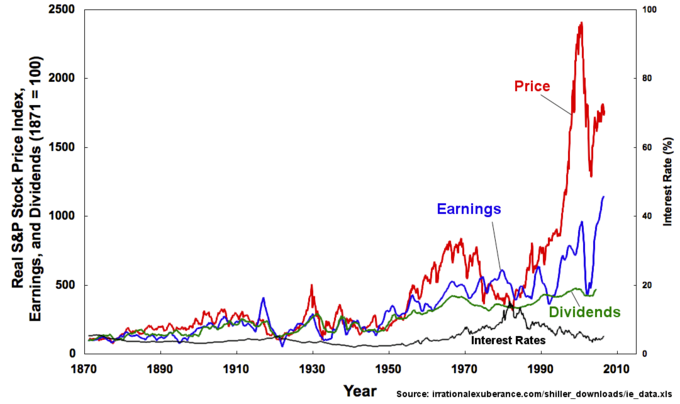

Dividends are a portion of company earnings regularly paid to shareholders, paid as some fixed amount per share price.
Describe the process of issuing a dividend
Dividends are payments made by a corporation to its shareholder members on a regular (usually quarterly) basis–these are essentially the shareholder's portion of a company's profits. A dividend is allocated as a fixed amount per share. Therefore, a shareholder receives a dividend in proportion to their shareholding; owning more shares results in greater dividends for the shareholder. When it is time to make dividend payments, corporations always pay preferred stock owners first, and then common stock dividends are allocated after all preferred dividends are paid in full. In the United States, dividends are usually declared quarterly by the corporation's board of directors. Dividends are one of the privileges of stock ownership, and preferred shares get more rights to them than common shares do.
Dividends per share (DPS) refers to the dollar amount shareholders earn for each share, calculated by dividing total dividend amount by total number of shares outstanding. Dividend yield refers the ratio between dividends per share and the market price of each share, and it is expressed in terms of percentage. Payout ratio is calculated by dividing the company's dividend by the earnings per share. A payout ratio greater than 1 means the company is paying out more in dividends for the year than it earned, while a low payout ratio indicates that the company is retaining a greater proportion of their earnings instead of paying out dividends. These ratios have historically been used as indicators of a stock's investment strength and the company's overall performance.
Dividends may be allocated in different forms of payment, outlined below:Cash dividends are the most common. As the name suggests, these are paid out as currency via electronic funds transfer or a printed paper check. For each share owned, a declared amount of money is distributed. Thus, if a person owns 1000 shares and the cash dividend is USD 0.90 per share, the holder of the stock will be paid USD 900.Stock dividends (also known as scrips) are payments in the form of additional stock shares of the company itself or one of its subsidiaries, as the name suggests. This may be a more palatable option for companies who would prefer to use its earnings towards growth of the company, rather than diverting them into cash dividends for shareholders. Property dividends or dividends in specie (Latin for "in kind") are those paid out in the form of assets from the issuing corporation or another corporation, such as a subsidiary corporation. They are relatively rare and can take the form of securities of other companies owned by the issuer, or products and services. Companies may also offer reinvestment plans where shareholders can automatically reinvest dividends into more stock.
For public companies, there are six important dates to remember regarding dividends:
Dividends are attractive to many investors because they are seen as steady streams of income from low risk investments.
Analyze what dividends mean to an investor making a decision on which stock to include in her portfolio
The nature of dividends may appeal to investors because they offer consistent returns on relatively low risk investments. While companies experiencing rapid growth are unlikely to offer dividends, established companies with stable business and less room to grow do pay dividends to shareholders. Despite the low earnings growth of these stocks, shareholders get the benefit of knowing that the value of their initial investment is likely to remain stable. They can still profit off a steady stream of dividend payments.
A firm's dividend decision may also serve as a signaling device which gives clues about a firm's future prospects. Due to information asymmetry between investors and the firm managers, investors will look to indicators like dividend decisions. Studies have shown that stock prices tend to increase when an increase in dividends is announced and tend to decrease when a decrease or omission is announced. Managers have more information than investors about the firm, and such information may inform their dividend decisions. When managers lack confidence in the firm's ability to generate cash flows in the future they may keep dividends constant or possibly even reduce the amount of dividends paid out. Conversely, managers that have access to information that indicates very good future prospects for the firm are more likely to increase dividends.
Investors can use this knowledge about managers' behavior to determine their decision to buy or sell the firm's stock, bidding the price up in the case of a positive dividend surprise or selling it down when dividends do not meet expectations. This, in turn, may influence the dividend decision as managers know that stock holders closely watch dividend announcements looking for good or bad news. Managers tend to avoid sending a negative signal to the market about the future prospects of their firm. This also tends to lead to a dividend policy of a steady, gradually increasing payment .
On the other hand, critics of dividends contend that company profits are best re-invested back into the company for research and development, capital expansion, and so forth. Their view is that an eagerness to return profits to shareholders may signal to investors that the management does not have ideas for the firm's future prospects.
Under perfect market conditions, stockholders would ultimately be indifferent between returns from dividends or returns from capital gains.
Discuss the implications and assumptions of the Modigliani-Miller theory
Economists Modigliani and Miller put forth a theory that only the firm's ability to earn money and riskiness of its activity can have an impact on the value of the company; the value of a firm is unaffected by how that firm is financed. It does not matter if the firm's capital is raised by issuing stock or selling debt, nor does it matter what the firm's dividend policy is. Dividend irrelevance follows from this capital structure irrelevance.
Modigliani-Miller grounded their theory on a set of assumptions:
Under these frictionless perfect capital market assumptions, dividend irrelevance follows from the Modigliani-Miller theorem. Essentially, firms that pay more dividends offer less stock price appreciation that would benefit stock owners who could choose to profit from selling the stock. However, the total return from both dividends and capital gains to stockholders should be the same. If dividends are too small, a stockholder can simply choose to sell some portion of his stock. Therefore, if there are no tax advantages or disadvantages involved with these two options, stockholders would ultimately be indifferent between returns from dividends or returns from capital gains.
Since the publication of the papers by Modigliani and Miller, numerous studies have shown that it does not make any difference to the wealth of shareholders whether a company has a high dividend yield or if a company uses its earnings to reinvest in the company and achieves higher growth. However, the importance of a firm's dividend decision is still contested, with a number of theories arguing for dividend relevance.
Low dividend payouts can be interpreted in a number of ways, including: as a leading indicator of future growth or a sign of instability.
Discuss the advantages of a stock having a low dividend
The value of a dividend is expressed as some percentage proportion of the number of shares held. A relatively low payout could mean that the company is retaining more earnings toward developing the firm instead of paying stockholders. Some investors would prefer this low payout because it hints at future growth. Furthermore, retained earnings lead to long-term capital gains, which have taxation advantages over high dividend payouts, according to the Taxation Preference Theory. Taxes on capital gains are deferred into the future when the stock is actually sold, as opposed to immediately like cash dividends. Furthermore, capital gains are taxed at lower rates than dividends. Therefore, taxation benefit is another point in favor of low dividend payouts. According to the clientele effect, firms offering low dividend payout will attract certain investors who are looking for a long term investment and would like to avoid taxes.
However, under dividend irrelevance theory, the actual value of a dividend is inconsequential to investors. If the dividend is too low, they can simply sell off part of their portfolio to generate more income for themselves. The conflicting theories on dividend policy complicate interpretations of low dividends in real life.
Dividend value must also be considered in relation to other measures of the firm, such as their earnings and stock price.
If a stock has a low dividend yield, this implies that the stock's market price is considerably higher than the dividend payments a shareholder gets from owning the stock. There are a number of ways to interpret this ratio. A history of low or falling yields may indicate that the firm's cash situation is not stable. They cannot afford to give higher dividends because they do lack cash on hand.
This instability can be seen in calculating the dividend cover, which is calculated as DC = EPS/DPS. A ratio of 2 or higher is considered safe—in the sense that the company can well afford the dividend—but anything below 1.5 is risky. If the ratio is under 1, the company is using its retained earnings from a previous year to pay this year's dividend, which signals the risk of instability and poor performance of the firm. Signs of risk will deter investors, particularly if they are looking for cash dividends as a steady source of income.
Conversely, a low dividend yield can be considered evidence that the firm is experiencing rapid growth or that future dividends might be higher. Investors who prefer a "growth investment" strategy may prefer a stock with low to no dividend yields, as that is one of several indicators for a firm experiencing quick growth.
High dividend yields are attractive to investors who desire current income and stability since established firms often offer such stocks.
Discuss the advantages of owning stock that has a high dividend
A high-yield stock is generally considered as a stock whose dividend yield is higher than the yield of any benchmark average such as the 10 year U.S. Treasury note. The classification of a high-yield stock is relative to the criteria of any given analyst. Some analysts may consider a 2% dividend yield to be high, while others may consider 2% to be low. There is no set standard for judging whether a dividend yield is high or low. A high dividend yield indicates undervaluation of the stock because the stock's dividend is high relative to the stock price. High dividend yields are particularly sought after by income and value investors. High-yield stocks tend to outperform low yield and no yield stocks during bear markets because many investors consider dividend paying stocks to be less risky.
Generally speaking, most firms that pay out high dividends are quite mature, profitable, and stable. They pay out high dividends simply because they have too much cash flow and few positive net present value investment possibilities. But not all firms offering high dividend yields are steady, reliable investments. Perhaps the greatest risk in high-dividend securities is a falling stock price, which means that the high yield is due to decline of the firm. If a company is not earning enough profit to cover their dividend payments, the current dividend is unsustainable. In this case, a falling stock price indicates investor fears of a dividend cut. Therefore, if an investor buys these risky high-dividend stocks and the dividend is decreased because the company is suffering losses, the investor will have the problem of both less dividend income and portfolio of stocks with declining values. There may be investors, such as retirees, who prefer current income from high dividends to low dividends and growth in stock value. Theories may say this should not matter since investors could sell a portion of the low dividend paying stocks to supplement cash flow, but in the real world, markets are not frictionless. The sale of securities involves transaction costs that may outweigh any benefits of the sale. Therefore, some individuals are better off holding high dividend stock.
The Dogs of the Dow strategy is a well known and rather extreme strategy that incorporates high dividend yields. The strategy dictates that the investor compile a list of the 10 highest dividend yielding stocks from the Dow Jones Industrial Average and buying an equal position in all 10 at the beginning of each year. At the end of each year, the investor finds the 10 highest dividend yield stocks again, and reallocates their positions so as to have an equal position in all 10 Dogs of the Dow. The Dogs of the Dow made a compounded annual return of 18% from 1975 to 1999 outperforming the market by 3%. This would make 10,000 turn into 625,000 in 25 years. Risk aversion can be applied to many different situations including investments, lotteries, and any other situations with uncertain outcomes.
Proponents of the Dogs of the Dow strategy argue that blue chip companies do not alter their dividend to reflect trading conditions. Therefore, the dividend is a measure of the average worth of the company. In contrast, the stock price fluctuates through the business cycle. This should mean that companies with a high yield, with high dividend relative to price, are near the bottom of their business cycle and are likely to see their stock price increase faster than low yield companies. Under this model, an investor annually reinvesting in high-yield companies should out-perform the overall market. The logic behind this is that a high dividend yield suggests both that the stock is oversold and that management believes in its company's prospects and is willing to back that up by paying out a relatively high dividend. Investors are thereby hoping to benefit from both above average stock price gains as well as a relatively high quarterly dividend. Of course, several assumptions are made in this argument. The first assumption is that the dividend price reflects the company size rather than the company business model. The second is that companies have a natural, repeating cycle in which good performances are predicted by bad ones.
Accounting for dividends depends on their payment method (cash or stock).
Describe the accounting considerations associated with dividends
Accounting for dividends depends on their payment method (cash or stock). On the declaration day, the firm's Board of Directors announces the issuance of stock dividends or payment of cash dividends. Cash dividends are payments taken directly from the firm's income. This is formally accounted for by marking the amount down as a liability for the firm. The amount is placed in a separate dividends payable account.
The accounting equation for this is simply:
Retained Earnings = Net Income − Dividends
Retained earnings are part of the balance sheet (another basic financial statement) under "stockholders equity (shareholders' equity). " It is mostly affected by net income earned during a period of time by the company less any dividends paid to the company's owners/stockholders. The retained earnings account on the balance sheet is said to represent an "accumulation of earnings" since net profits and losses are added/subtracted from the account from period to period.
On the date of payment, when dividend checks are mailed out to stockholders, the dividends payable account is debited and the firm's cash account is credited.
Stock dividends are parsed out as additional stocks to shareholders on record. Unlike cash dividends, this does not come out of the firm's income. The firm is able to both maintain their cash and give dividends to investors. Here, the firm's net assets remain the same. If a firm authorizes a 15% stock dividend on Dec 1st, distributable on Feb 29, and to stockholders of record on Feb 1, the stock currently has a market value of \$15 and a par value of \$4. There are 150,000 shares outstanding and the firm will issue 22,500 additional shares. The value of the dividend is (150,000)(15%)(15) = \$337,500.
The declaration of this dividend debits retained earnings for this value and credits the stock dividend distributable account for the number of new stock issued (150,000*.15 = 22,500) at par value. We must also consider the difference between market value and par (stated) value and record that as credit for additional paid-in-capital . On the day of issuance, the stock dividends distributable account is debited and stock is credited \$90,000.
The significance of investors' dividend preferences is a contested topic in finance that has serious implications for dividend policy.
Identify the criteria that define a company's dividend policy
The role of investor preferences for dividends and the value of a firm are pieces of the dividend puzzle, which is the subject of much academic debate. Assuming dividend relevance, coming up with a dividend policy is challenging for the directors and financial manager of a company because different investors have different views on present cash dividends and future capital gains. Investor preferences are first split between choosing dividend payments now, or future capital gains in lieu of dividends. Further elements of the dividend policy also include:1. High versus low payout, 2. Stable versus irregular dividends, and 3. Frequency of payment. Cash dividends provide liquidity, but the bonus share will bring capital gains to the shareholders. The investor's preference between the current cash dividend and the future capital gain has been viewed in kind.
Many people hold the opinion that the future gains are more risky than the current dividends, as the "Bird-in-the-hand Theory" suggests. This view is supported by both the Walter and Gordon models, which find that investors prefer those firms which pay regular dividends, and such dividends affect the market price of the share. Gordon's dividend discount model states that shareholders discount the future capital gains at a higher rate than the firm's earnings, thereby evaluating a higher value of the share. In short, when the retention rate increases, they require a higher discounting rate.
In contrast, others (see Dividend Irrelevance Theory) argue that the investors are indifferent between dividend payments and the future capital gains. Therefore, the content of a firm's dividend policy has no real effect on the value of the firm.
Investor preferences play an uncertain role in the "dividend puzzle," which refers to the phenomenon of companies that pay dividends being rewarded by investors with higher valuations, even though according to many economists, it should not matter to investors whether or not a firm pays dividends. There are a number of factors, such as psychology, taxes, and information asymmetries tied into this puzzle, which further complicate the matter.
Investors' preference for stock or cash depends on their inclinations toward factors such as liquidity, tax situation, and flexibility.
Assess whether a particular shareholder would prefer stock or cash dividends
If a firm decides to parcel out dividends to shareholders, they have a choice in the form of payment: cash or stock. Cash dividends are those paid out in currency, usually via electronic funds transfer or by paper check. This is the most common method of sharing corporate profits with the shareholders of a company. Stock or scrip dividends are those paid out in the form of additional stock shares of either the issuing corporation or another corporation.Cash dividends provide investors with a regular stream of income. Stock dividends, unlike cash dividends, do not provide liquidity to the investors; however, they do ensure capital gains to the stockholders. Therefore, if investors are not interested in a long-term investment, they will prefer regular cash payments over payments of additional stock. When choosing between cash or stock dividends, the trade-off is between liquidity in the short-term or income from capital gains in the long-term.
Costs of taxes can also play a role in choosing between cash or stock dividends. Cash dividends are immediately taxable under most countries' tax codes as income, while stock dividends are not taxable until sold for capital gains (if stock was the only choice for receiving dividends). This can be seen as a huge benefit of stock dividends, particularly for investors of a high income tax bracket. A further benefit of the stock dividend is its perceived flexibility. Shareholders have the choice of either keeping their shares in hopes of high capital gains, or selling some of the new shares for cash, which is somewhat like receiving a cash dividend.
If the payment of stock dividends involves the issuing of new shares, it increases the total number of shares while lowering the price of each share without changing the market capitalization of the shares held. It has the same effect as a stock split: the total value of the firm is not affected. If the payment involves the issuing of new shares, it increases the total number of shares while lowering the price of each share without changing the market capitalization, or total value, of the shares held. As such, receiving stock dividends does not increase a shareholder's stake in the firm; by contrast, a shareholder receiving cash dividends could use that income to reinvest in the firm and increase their stake.
For the firm, dividend policy directly relates to the capital structure of the firm, so choosing between stock dividends and cash dividends is an important consideration. A firm that is still in its stages of growth will most likely prefer to retain its earnings and put them toward firm development, instead of sending them to their shareholders. The firm could also choose to appease investors with stock dividends, which would still allow it to retain its earnings. Conversely, a firm that is already quite stable with low growth is much more likely to choose payment of dividends in cash. The needs and cash flow of the firm are necessary points of consideration in choosing a dividend policy.
Dividend decisions are frequently seen by investors as revealing information about a firm's prospects; therefore firms are cautious with these decisions.
Describe what information a shareholder can obtain from a company issuing dividends
A dividend decision may have an information signalling effect that firms will consider in formulating their policy. This term is drawn from economics, where signaling is the idea that one agent conveys some information about itself to another party through an action.
Signaling took root in the idea of asymmetric information, which says that in some economic transactions, inequalities in access to information upset the normal market for the exchange of goods and services . An information asymmetry exists if firm managers know more about the firm and its future prospects than the investors. A model developed by Merton Miller and Kevin Rock in 1985 suggests that dividend announcements convey information to investors regarding the firm's future prospects. Many earlier studies had shown that stock prices tend to increase when an increase in dividends is announced and tend to decrease when a decrease or omission is announced. Miller and Rock pointed out that this is likely due to the information content of dividends.
When investors have incomplete information about the firm (perhaps due to opaque accounting practices) they will look for other information in actions like the firm's dividend policy. For instance, when managers lack confidence in the firm's ability to generate cash flows in the future they may keep dividends constant, or possibly even reduce the amount of dividends paid out. Conversely, managers that have access to information that indicates very good future prospects for the firm (e.g. a full order book) are more likely to increase dividends.
Investors can use this knowledge about managers' behavior to inform their decision to buy or sell the firm's stock, bidding the price up in the case of a positive dividend surprise, or selling it down when dividends do not meet expectations. This, in turn, may influence the dividend decision as managers know that stock holders closely watch dividend announcements looking for good or bad news. As managers tend to avoid sending a negative signal to the market about the future prospects of their firm, this also tends to lead to a dividend policy of a steady, gradually increasing payment.
Change in a firm's dividend policy may cause loss of old clientele and gain of new clientele, based on their different dividend preferences.
Describe how the clientele effect can influence stock price
The clientele effect is the idea that the type of investors attracted to a particular kind of security will affect the price of the security when policies or circumstances change. These investors are known as dividend clientele. For instance, some clientele would prefer a company that doesn't pay dividends at all, but instead invests their retained earnings toward growing the business. Some would instead prefer the regular income from dividends over capital gains. Of those who prefer dividends over capital gains, there are further subsets of clientele; for example, investors might prefer a stock that pays a high dividend, while another subset might look for a balance between dividend payout and reinvestment in the company. Retirees are more likely to prefer high dividend payouts over capital gains since this provides them with cash income. Therefore, if a company discontinued paying dividends, the clientele effect may cause retiree shareholders to sell the stock in favor of other income generating investments.
Clientele may choose to sell their stock if a firm changes its dividend policy, and deviates considerably from its preferences. On the other hand, the firm may attract a new clientele group if its new dividend policy appeals to the group's dividend preferences. These changes in demographics related to a stock's ownership due to a change of dividend policy are examples of the "clientele effect. "
This theory is related to the dividend irrelevance theory presented by Modigliani and Miller, which states that, under particular assumption, an investor's required return and the value of the firm are unrelated to the firm's dividend policy. After all, clientele can just choose to sell off their holdings if they dislike a firm's policy change, and the firm may simultaneously attract a new subset of clientele who like the policy change. Therefore, stock value is unaffected. This is true as long as the "market" for dividend policy is in equilibrium, where demand for such a policy meets the supply.
The clientele effect's real world implication is that what matters is not the content of the dividend policy, but rather the stability of the policy. While investors can always choose to sell shares of firms with undesirable dividend policy, and buy shares of firms with attractive dividend policy, there are brokerage costs and tax considerations associated with this. As a result, an investor may stick with a stock that has a sub-optimal dividend policy because the cost of switching investments outweighs the benefit the investor would receive by investing in a stock with a better dividend policy.
Although commonly used in reference to dividend or coupon (interest) rates, the clientele effect can also be used in the context of leverage (debt levels), changes in line of business, taxes, and other management decisions.
Companies determine what kind of investors they want to attract and the investment opportunities they face before setting the target payout ratio.
Calculate a company's target payout ratio
The Target Payout Ratio, or Dividend Payout Ratio, is the fraction of net income a firm pays to its stockholders in dividends. It is calculated by dividing the dividends distributed by the net income for the same period. The part of the earnings not paid to investors in the form of a dividend is left for investment to provide for future earnings growth. Investors seeking high current income and limited capital growth prefer companies with high Dividend Payout Ratios.
However investors seeking capital growth may prefer lower payout ratios. This is appealing to some investors because a lower dividend implies that more earnings are being reinvested in the company, which should cause the stock price to rise. Some investors, such as young people saving for retirement, may prefer higher returns later than smaller cash distributions now.
The Target Payout Ratio depends on what investors the management of a company are trying to attract, and what current investors' expectations are. It also depends on the growth goals of the company. If a company is trying to grow very fast, it may prefer to reinvest its income in expanding operations.
A more established firm with an established market probably does not need to expand its operations, and would prefer to use its earning to compensate its investors. High growth firms in early life generally have low or zero payout ratios. As they mature, they tend to return more of the earnings back to investors.
The payout rate has gradually declined from 90% of operating earnings in the 1940s to about 30% in recent years. For smaller growth companies, the average payout ratio can be as low as 10%
The Residual Dividend Model first uses earnings to finance new projects, then distributes the remainder as dividends.
Apply the Residual Dividend Model to making decisions about dividends
The Residual Dividend Model is a method a company uses to determine the dividend it will pay to its shareholders.
Companies which use retained earnings to finance new projects use this method. The company first determines which new projects it wants to finance, dedicates funds to those projects, and then distributes any leftover profits to its shareholders as dividends.
This model can lead to unpredictable and inconsistent dividend returns for the investor. However, the company's goal is to generate further profits from the projects it funds, which benefits the shareholders overall.
The Residual Dividend Model is an outgrowth of The Modigliani and Miller Theory that posits that dividends are irrelevant to investors. This school of thought believes that investors do not state any preference between current dividends and capital gains. It goes on to say that dividend policy does not determine market value of a stock. Accordingly, the shareholders are indifferent to the two ways by which their investment grows:
What investors want are high returns - either in the form of dividends or in the form of re-investment of retained earnings by the firm. Companies usually issue investors a check for their dividend.
The Residual Model dividend policy is a passive one and, in theory, does not influence market price because the same wealth is created for the investor regardless of the dividend. The firm paying out dividends is obviously generating income for an investor; however, even if the firm diverts some earnings for investment opportunities, the income of the investors will rise later, assuming that those investments are profitable. The dividend, therefore, fluctuates every year because of different investment opportunities and earning levels.
Dividends, which are distributed based on how many shares each person owns, can be paid using cash, stock, or other company property.
Classify the different types of dividends based on method of payment
A dividend is allocated as a fixed amount per share. Therefore, a shareholder receives a dividend in proportion to their shareholding.
Cash dividends are those paid out in currency, usually via electronic funds transfer or a printed paper check. Such dividends are a form of investment income and are usually taxable to the recipient in the year they are paid. This is the most common method of sharing corporate profits with the shareholders of the company. For each share owned, a declared amount of money is distributed. Thus, if a person owns 100 shares and the cash dividend is 50 cents per share, the holder of the stock will be paid 50 dollars. Dividends paid are not classified as an expense, but rather a deduction of retained earnings. Dividends paid does not show up on a Income Statement but does appear on the Balance Sheet.
A graph visualizing S&P's prices, earnings, and dividends over a 130-year period. Earnings and dividends have risen steadily over time; price spiked substantially around 2000 and is only slightly lower now.
Stock or scrip dividends are those paid out in the form of additional stock shares of the issuing corporation or another corporation, such as its subsidiary corporation. They are usually issued in proportion to shares owned. For example, for every 100 shares of stock owned, a 5% stock dividend will yield 5 extra shares. If the payment involves the issue of new shares, it is similar to a stock split: it increases the total number of shares while lowering the price of each share without changing the market capitalization, or total value, of the shares held.
Property dividends or dividends in specie (Latin for "in kind") are those paid out in the form of assets from the issuing corporation or another corporation, such as a subsidiary corporation. They are relatively rare and most frequently are securities of other companies owned by the issuer. However, they can take other forms, such as products and services.
Interim dividends are dividend payments made before a company's annual general meeting and final financial statements. This declared dividend usually accompanies the company's interim financial statements.
Other dividends can be used in structured finance. Financial assets with a known market value can be distributed as dividends; warrants are sometimes distributed in this way. For large companies with subsidiaries, dividends can take the form of shares in a subsidiary company. A common technique for "spinning off" a company from its parent is to distribute shares in the new company to the old company's shareholders. The new shares can then be traded independently.
A stock split increases the number of shares outstanding without changing the market value of the firm.
Describe a stock split
A stock split or stock divide increases the number of shares in a public company. Suppose a company has 1,000 shares outstanding. The company may want to increase this number to 2,000 shares without issuing new shares. They would split their stock 2-for-1. That means that every shareholder trades in one old share and gets two new shares in return.
The ownership stake for each shareholder remains constant because the number of shares held changes in proportion to the number of shares outstanding. They own the same percentage of the outstanding shares, though the nominal number of shares increases.
The price of the shares, however, changes. Since the market value of the company remains the same, the price of the new shares adjusts to reflect the new number of outstanding shares. For example, a company that has 100,000 shares outstanding that trade at \$6 has a market capitalization of \$600,000. After a 3-for-1 stock split the market capitalization of the company remains unchanged at \$600,000, but there are not 300,000 shares trading at \$2.
Lowering the price per share is attractive to some companies. Berkshire Hathaway Class A shares have never been split, so the price has followed the company's growth over time . Since the price of a Class A share was over \$121,000 on May 2, 2012, smaller investors may have chosen not to invest in Berkshire Hathaway Class A shares because of cash-flow or liquidity concerns. There are, however, Class B shares that trade at a lower value.
Stock dividends are when a company gives each shareholder additional stock in lieu of a cash dividend.
Create a journal entry to record a stock dividend and a stock split
In lieu of cash, a company may choose to pay its dividend in the form of stock. Instead of each shareholder receiving, say \$2 for each share, they may receive an additional share. A stock dividend (also known as a scrip dividend) can be the economic equivalent of a stock split.
When a stock dividend is paid, no shareholder actually increases the values of his or her assets. The total number of shares outstanding increases in proportion to the change in the number of shares held by each shareholder. If a 5% stock dividend is paid, the total number of shares outstanding increases by 5%, and each shareholder will receive 5 additional shares for each 100 held. As a result, each shareholder has the same ownership stake as before the stock dividend.
In addition, the value of the shares held does not change for each shareholder. As the number of shares outstanding increases, the price per share drops because the market capitalization does not change. Therefore, each shareholder will hold more shares, but each has a lower price so the total value of the shares remains unchanged.
The stock dividend is not, however, exactly the same as a stock split. A stock split is paid by switching out old shares for a greater number of new shares. The company is essentially converting to a new set of shares and asking each shareholder to trade in the old ones.
A stock dividend could be paid from shares not-outstanding. These are the company's own shares that it holds: they are not circulating in the market, but were issued just the same. The company may have gotten these shares from share repurchases, or simply from them not being sold when issued.
Stock dividends may also be paid from non-outstanding stock or from the stock of another company (e.g. its subsidiary).
The company would record the stock dividend as a debit to the retained earnings account and credit both common stock and the paid in capital accounts.
An advantage of paying stock dividends instead of cash dividends to the shareholder is due to tax considerations. Cash dividends are taxed, while stock dividends are not . Of course, stock dividends don't actually change the asset value of the shareholders so, in effect, nothing of substance has occurred.
Reverse splits are when a company reduces the number of shares outstanding by offering a number of new shares for each old one.
Define a reverse split
By owning a share, the shareholder owns a percentage of the company whose share s/he owns. A share, however, does entitle the shareholder to a specific percentage ownership; the amount of the company that the shareholder owns is dependent of the number of shares owned and the number of shares outstanding. If Jim owns 10 shares of Oracle, and there are 1,000 shares outstanding, Jim effectively owns 1% of Oracle. If the number of shares outstanding were to double to 2,000, Jim's 10 shares would now correspond to a 0.5% ownership stake. In order for Jim's ownership stake to remain constant, the number of shares he holds must change in proportion to change in outstanding shares: he must own 20 shares if there are 2,000 shares outstanding.
That is the premise behind a reverse stock split. In a reverse stock split (also called a stock merge), the company issues a smaller number of new shares. New shares are typically issued in a simple ratio, e.g. 1 new share for 2 old shares, 3 for 4, etc.
The reduction in the number of issued shares is accompanied by a proportional increase in the share price. A company with a market capitalization of \$1,000,000 from 1,000,000 shares trading at \$1 chooses to reduce the number of outstanding shares to 500,000 through a reverse split. This leads to a corresponding rise in the stock price to \$2.
There is a stigma attached to doing a reverse stock split, so it is not initiated without very good reason and may take a shareholder or board meeting for consent. Many institutional investors and mutual funds, for example, have rules against purchasing a stock whose price is below some minimum. In an extreme case, a company whose share price has dropped so low that it is in danger of being delisted from its stock exchange, might use a reverse stock split to increase its share price. For these reasons, a reverse stock split is often an indication that a company is in financial trouble.
A reverse stock split may be used to reduce the number of shareholders. If a company completes reverse split in which 1 new share is issued for every 100 old shares, any investor holding less than 100 shares would simply receive a cash payment. If the number of shareholders drops, the company may be placed into a different regulatory categories and may be governed by different laws .
A share repurchase is when a company buys its own stock from public shareholders, thus reducing the number of shares outstanding.
Describe the different ways a company may repurchase its stock
An alternative to cash dividends is share repurchases. In a share repurchase, the issuing company purchases its own publicly traded shares, thus reducing the number of shares outstanding. The company then can either retire the shares, or hold them as treasury stock (non-circulating, but available for re-issuance).
When a company repurchases its own shares, it reduces the number of shares held by the public. The reduction of the shares outstanding means that even if profits remain the same, the earnings per share increase. Repurchasing shares when a company's share price is undervalued benefits non-selling shareholders and extracts value from shareholders who sell.
Repurchasing shares will lead to a corresponding increase in price of the shares still outstanding. The market capitalization of the company is unchanged, meaning that a reduction in the number of shares outstanding must be accompanied by an increase in stock price.
There are six primary repurchasing methods:
Share repurchases are beneficial when the stock is undervalued, management needs to meet a financial metric, or there is a takeover threat.
Discuss the benefits of a company repurchasing its shares
A company may seek to repurchase some of its outstanding shares for a number of reasons. The company may feel that the shares are undervalued, an executive's compensation may be tied to earnings per share targets, or it may need to prevent a hostile takeover.
For shareholders, the primary benefit is that those who do not sell their shares now have a higher percent ownership of the company's shares and a higher price per share. Those who do choose to sell have done so at a price they are willing to sell at - unless there was a 'put' clause, in which case they had to sell because of the structure of the share, something they would have already known when they bought the shares.
Repurchasing shares may also be a signal that the manager feels that the company's shares are undervalued. In this event, it will choose to repurchase shares, and then resell them in the open market once the price increases to accurately reflect the value of the company.
In some instances, executive compensation may be tied to meeting certain earnings per share (EPS) metrics. If management needs to boost the EPS of the company to meet the metric, s/he has two choices: raise earnings or reduce the number of shares. If earnings cannot be increased, there are a number of ways to artificially boost earnings (called earnings management), but s/he can also reduce the number of shares by repurchasing shares . Strictly speaking, this is a benefit to the management and executives, not the company or the shareholders. -Thwart.
A company can take over another firm if it holds enough of the other takeover target's shares (the buyer of the shares is called the bidder, and the company it is trying to buy is called the takeover target). The bidder is buying the takeover target's shares in an attempt to purchase enough to own it. Assuming the firm does not want to be taken over this way, the takeover attempt is called hostile. In order to prevent this from happening, the takeover target needs to prevent the bidder from purchasing enough of the shares. To do this, the takeover target will repurchase its own shares from the unfriendly bidder, usually at a price well above market value. Furthermore, it can prevent future takeover attempts. Companies with a lot of cash on their balance sheets are more attractive takeover targets because the cash can be used to pay down the debt incurred to carry out the acquisition. Share repurchases are one way of lowering the amount of cash on the balance sheet.
Share repurchases often give an advantage to insiders and can be used to manipulate financial metrics.
Discuss the drawbacks of a share repurchase
There are a number of drawbacks to share repurchases. Both shareholders and the companies that are repurchasing the shares can be negatively affected.
Shares may be repurchased if the management of the company feels that the company's stock is undervalued in the market. It repurchases the shares with the intention of selling them once the market price of the shares increase to accurately reflect their true value. Not every shareholder, however, has a fair shot at knowing whether the repurchase price is fair. The repurchasing of the shares benefits the non-selling shareholders and extracts value from shareholders who sell. This gives insiders an advantage because they are more likely to know whether they should sell their shares to the company .
Furthermore, share repurchases can be used to manipulate financial metrics. All financial ratios that include the number of shares outstanding (notably earnings per share, or EPS) will be affected by share repurchases. Since compensation may be tied to reaching a high enough EPS number, there is an incentive for executives and management to try to boost EPS by repurchasing shares. Inaccurate EPS numbers are not good for investors because they imply a degree of financial health that may not exist.
From the investor's standpoint, one drawback of share repurchases is that it's hard to judge how it will affect the valuation of the company. Companies often announce repurchases and then fail to complete them, but repurchase completion rates increased after companies were forced to retroactively disclose their repurchase activity. It is difficult for shareholders, especially relatively uninformed ones, to judge how the announcement will affect the value of their holdings if there is no guarantee that the full announced repurchase will occur.
Dividend reinvestment plans (DRIPs) automatically reinvest cash dividends in the stock.
Describe a dividend reinvestment plan
In some instances, a company may offer its shareholders an alternative option to receiving cash dividends. The shareholder chooses to not receive dividends directly as cash; instead, the shareholder's dividends are directly reinvested in the underlying equity. This is called a dividend reinvestment program or dividend reinvestment plan (DRIP).
The purpose of the DRIP is to allow the shareholder to immediately reinvest his or her dividends in the company. Should the shareholder choose to do this on his or her own, s/he would have to wait until enough cash accumulates to buy a whole number of shares and s/he would also incur brokerage fees .
Participating in a DRIP, however, does not mean that the reinvestment of the dividends is free for the shareholder. Some DRIPs are free of charge for participants, while others do charge fees and/or proportional commissions.
DRIPs have become popular means of investment for a wide variety of investors as DRIPs enable them to take advantage of dollar-cost averaging with income in the form of corporate dividends that the company is paying out. Not only is the investor guaranteed the return of whatever the dividend yield is, but s/he may also earn whatever the stock appreciates to during his or her time of ownership. However, s/he is also subject to whatever the stock may decline to, as well.
There is an advantage to the the company managing the DRIP, too. DRIPS inherently encourage long-term investment in the shares, which helps to mitigate some of the volatility associated with active-trading. DRIPs help to stabilize the stock price.
The name "DRIP" is generally associated with programs run by the dividend-paying company. However, some brokerage firms also offer similar plans where shareholders can choose to have their cash dividends reinvested in stocks for little or no cost. This is called a synthetic DRIP.
{kind=link}